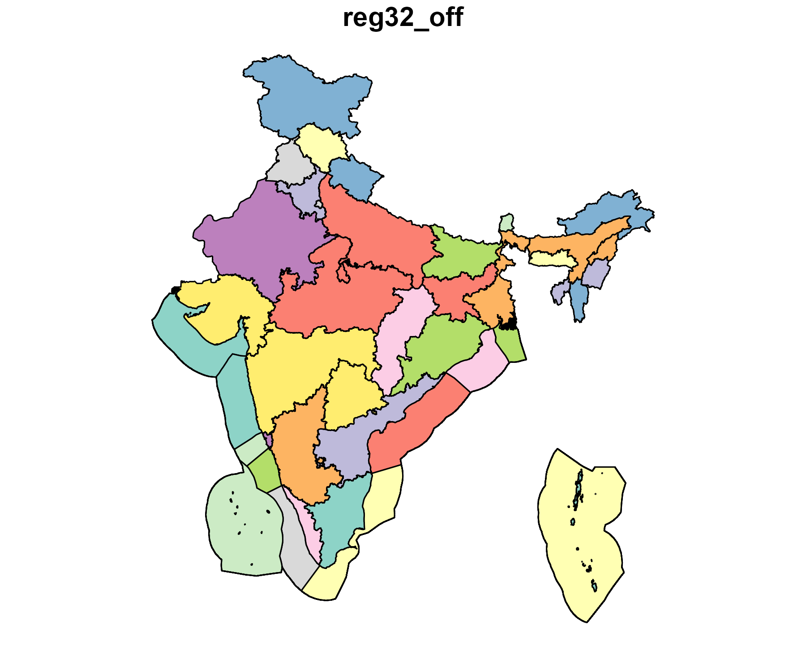

Configuration
# Set number of regions, currently '5' and '32' are available
# nreg <- 32
nreg <- 5
offshore <- TRUE # should offshore regions be included
islands <- TRUE # should islands be included
base_year <- 2019 # the first year of the model (base year or `BY`)
if (nreg == 5) {
transmission_matrix <- "current"
} else if (nreg == 32) {
# transmission_matrix <- "newlines_v01" # ~70 power lines
# transmission_matrix <- "newlines_v02" # ~50 power lines
transmission_matrix <- "newlines_v03" # ~30 power lines
} else {
stop("Only 5 and 32 regions are currently implemented")
}
# region variable name to use in functions (e.g. `get_ideea_data`)
regN <- paste0("reg", nreg)
regN_off <- paste0(regN, "_off")
# wind and solar clustering tolerance
tol_win_cl <- 0.05
tol_sol_cl <- 0.05
library(tidyverse)
library(data.table)
library(sf)
library(glue)
library(data.table)
library(here)
# if IDEEA is installed, uncomment this line to load IDEEA
library(IDEEA)
# if running from the IDEEA folder without installation
# devtools::load_all(".")
set_progress_bar()
# show_progress_bar(F)If not done yet, configure your system, editing and saving global options:
ideea_global_options(edit = TRUE)Regions
ideea_sf <- get_ideea_map(nreg,
offshore = offshore, islands = islands,
rename = FALSE
)
plot(ideea_sf[regN_off], key.width = lcm(4.5))
Time resolution
Structure of sub-annual time resolution is done calendar
objects, that specifies levels of nested time-frames (such as ‘ANNUAL’,
‘MONTH’, ‘DAY’, ‘HOUR’, etc. depending on the modeling goals and decided
level of details). This structure of modeled sub-annual time resolution
is assigned by a timetable data.frame with columns named as
used time-frames, as well as ‘slice’ (refers to the lowest level of
‘time-slices’ with unique names, e.g. ‘d001_h15’ indicating the 1st day
of the year and the 15th hour of the day), the ‘share’ column (for the
share of the time-frame in the year), and ‘weight’ (for the weight of
the time-frame in the year, used in sampled calendars).
ideea_modules$time_tables$d365_h24
#> ANNUAL YDAY HOUR slice share weight
#> <char> <char> <char> <char> <num> <num>
#> 1: ANNUAL d001 h00 d001_h00 0.0001141553 1
#> 2: ANNUAL d001 h01 d001_h01 0.0001141553 1
#> 3: ANNUAL d001 h02 d001_h02 0.0001141553 1
#> 4: ANNUAL d001 h03 d001_h03 0.0001141553 1
#> 5: ANNUAL d001 h04 d001_h04 0.0001141553 1
#> ---
#> 8756: ANNUAL d365 h19 d365_h19 0.0001141553 1
#> 8757: ANNUAL d365 h20 d365_h20 0.0001141553 1
#> 8758: ANNUAL d365 h21 d365_h21 0.0001141553 1
#> 8759: ANNUAL d365 h22 d365_h22 0.0001141553 1
#> 8760: ANNUAL d365 h23 d365_h23 0.0001141553 1This time-table is to define a calendar object, that
also describes the hierarchy of time-frames and sets the sequence of the
time-slices.
# the model is defined with the full calendar
calendar_d365_h24_full <- ideea_modules$calendars$calendar_d365_h24_full
# a scenario can be run with a subset of the time-slices
calendar_d365_h24_subset <-
ideea_modules$calendars$calendar_d365_h24_subset_1day_per_monthThe model object (described below) must have the
calendar object with all time-frames and time-slices used
in the model. However, scenarios can be solved for a subset of the
time-slices, defined by another calendar object with
sub-set of time-slices. Here we define a calendar with a subset of 1 day
per month and 24 hours per each day. Therefore, the total number of
time-slices in the subset is 12 days * 24 hours = 288 time-slices
(vs. 8760 time-slices in the full calendar).
Commodities
Commodities are the main objects of the model, representing the goods
and services that are traded in the model. Commodities can be energy
carriers (e.g. electricity, coal, oil, gas, biomass), emissions
(e.g. CO2, NOx, SOx, PM), or other goods and services. Commodities are
defined by their name, description, unit of measure, and time-frame by
the newCommodity function. Some of the commodity-objects
are pre-built in the energy module, and can be loaded from
there. Commodities specific to the electricity model are defined below.
Important features of commodities are their time-frame, and the limit
type (slot @limtype) that defines the balance equation for
the commodity. By default the limit type is set to “LO” (lower bound)
meaning that excess of commodity is allowed, but the deficit is not.
Other options are “UP” (upper bound) and “FX” (equality).
# energy
ELC <- newCommodity(
name = "ELC",
desc = "Electricity",
unit = "GWh",
timeframe = "HOUR"
)
# emissions
CO2 <- newCommodity(
name = "CO2",
desc = "Carbon emissions",
unit = "kt",
timeframe = "ANNUAL"
)
NOX <- newCommodity(
name = "NOX",
desc = "Nitrogen oxide emissions NOx",
unit = "kt",
timeframe = "ANNUAL"
)
SOX <- newCommodity(
name = "SOX",
desc = "Sulfur oxide emissions SOx",
unit = "kt",
timeframe = "ANNUAL"
)
PM <- newCommodity(
name = "PM",
desc = "Particulate matter (particle pollution)",
unit = "kt",
timeframe = "ANNUAL"
)
REN <- newCommodity(
name = "REN",
desc = "Generic renewable energy",
unit = "GWh",
timeframe = "ANNUAL"
)
# storing commodities in a repository
repo_comm <- newRepository(
name = "repo_comm",
desc = "Electricity & emissions commodities"
) |>
add(ELC, CO2, NOX, SOX, PM)Demand options
For the electricity-only model, the electricity is considered as the
final product, and the final demand can be set exogenously via the
demand class. The newDemand function creates
an object of class demand with detailed representation of
the demanded electricity by region, time-slice, and year. The values of
demand without information on the parameter dimension, such as the
region, time-slice, or year are considered default for the non-specified
dimensions, and will be filled-in on the interpolation step of the model
along with the missing years. Therefore it is enough to set values for
the base-year and the last year, if the demand is expected to grow
linearly. The load curve by region in India for 2019 is stored in the
load_2019_MWh dataset, and used in this example as the
base-year demand, extrapolated through the model’s horizon.
# call the load curve by region in 2019 from IDDEA dataset
load_BY <- get_ideea_data("load_2019_MWh", nreg = nreg, variable = "MWh") |>
mutate(GWh = MWh / 1e3) |>
select(-MWh)
# rename(region = {{regN}})
# define `demand` object with the historical load curve
DEMELC_BY <- newDemand(
name = "DEMELC_BY",
desc = "Houlry electric demand by region, base-year level",
commodity = "ELC",
unit = ELC@unit,
dem = data.frame(
region = load_BY[[regN]],
# year = load_BY$year, # assign to all years
slice = load_BY$slice,
dem = load_BY$GWh # * dem_adj
)
)
# display first 6 regions
ggplot(filter(load_BY, get(regN) %in% unique(load_BY[[regN]])[1:6])) +
geom_line(aes(HOUR, GWh, color = YDAY, group = YDAY), alpha = .25) +
scale_color_viridis_c(option = "H", limits = c(1, 365)) +
scale_x_continuous(limits = c(0, 23)) +
# facet_wrap(~ get(regN), ncol = floor(nreg / 3), scales = "free_y") +
facet_wrap(~ get(regN), ncol = 2, scales = "free_y") +
labs(y = "GWh", x = "hour") +
theme_bw()Hourly load by region, 2019 (first six regions)
The demand growth is set by another demand-object with linear growth of the demand in every region, time-slice from zero to 2x the base-year level by 2050, and 3x by 2070. If the model horizon is longer, the demand can be extrapolated further.
# define demand in several years, e.g. 2020, 2050, 2070,
# which will be interpolated before solving the model ('interpolation' step)
load_2x_2050 <-
rbind(
mutate(load_BY, year = 2020, GWh = 0.0 * GWh),
mutate(load_BY, year = 2050, GWh = 2 * GWh),
mutate(load_BY, year = 2070, GWh = 3 * GWh)
) |>
as.data.table()
load_BY
#> reg5 offshore mainland slice datetime MONTH YDAY HOUR
#> <char> <lgcl> <lgcl> <char> <POSc> <int> <int> <int>
#> 1: EAST FALSE TRUE d001_h00 2019-01-01 00:00:00 1 1 0
#> 2: EAST FALSE TRUE d001_h01 2019-01-01 01:00:00 1 1 1
#> 3: EAST FALSE TRUE d001_h02 2019-01-01 02:00:00 1 1 2
#> 4: EAST FALSE TRUE d001_h03 2019-01-01 03:00:00 1 1 3
#> 5: EAST FALSE TRUE d001_h04 2019-01-01 04:00:00 1 1 4
#> ---
#> 43796: WEST FALSE TRUE d365_h19 2019-12-31 19:00:00 12 365 19
#> 43797: WEST FALSE TRUE d365_h20 2019-12-31 20:00:00 12 365 20
#> 43798: WEST FALSE TRUE d365_h21 2019-12-31 21:00:00 12 365 21
#> 43799: WEST FALSE TRUE d365_h22 2019-12-31 22:00:00 12 365 22
#> 43800: WEST FALSE TRUE d365_h23 2019-12-31 23:00:00 12 365 23
#> GWh
#> <num>
#> 1: 10.833
#> 2: 10.214
#> 3: 9.974
#> 4: 9.808
#> 5: 9.684
#> ---
#> 43796: 44.449
#> 43797: 41.124
#> 43798: 38.602
#> 43799: 36.833
#> 43800: 36.831
# define the second demand object with the load growth
DEMELC_2X <- newDemand(
name = "DEMELC_2X",
desc = "Additional demand growth, proportional to the current load",
commodity = "ELC",
unit = ELC@unit,
dem = data.frame(
region = load_2x_2050[[regN]],
year = load_2x_2050$year,
slice = load_2x_2050$slice, # comment to assign to all hours
dem = load_2x_2050$GWh # * dem_adj
)
)Alternative demand-objects can be created and added to the model
before interpolation/solution to represent different scenarios or policy
options.
Another ways to set the demand in the model also available. For example,
export objects define the potential external demand with
levels and also the price of the electricity. If other sectors are
modeled, they can also set the demand for electricity,
e.g. transport or industry modules.
Supply & resources
While demand objects set the final demand commodity (ELC
in this example), the supply objects define the sources of primary
commodities (e.g. coal, gas, oil, biomass, nuclear, renewable energy
sources) that are used in the production of the final or interim
products. The resources used in the electricity model has been already
defined in the energy module, and can be loaded from there.
Another way to introduce a supply of a commodity to the model is
import from another region or from outside the model
regions (“The Rest of the World”, ROW). For every tradable energy
commodity we defined the import with higher than domestic
supply price to ensure that the domestic supply is used first and extend
the availability of the commodities’ supply beyond the domestic
resources – essencial for long-term planning.
Primary energy
# import energy supply module
energy_module <- ideea_modules$energy[[regN]]
# check if the module is available for the requested number of regions
if (is_empty(energy_module)) {
stop("ideea_modules$energy is not available for ", nreg, " regions")
}
# define repository for energy supply and resources
repo_supply <- newRepository(
name = "repo_supply",
desc = "Energy supply (markets)"
) |>
add( # import objects from energy module
# coal
energy_module$COA, # coal commodity
energy_module$SUP_COA, # coal domestic supply
energy_module$IMP_COA, # coal import
# natural gas
energy_module$GAS, # natural gas commodity
energy_module$SUP_GAS, # natural gas domestic supply
energy_module$IMP_GAS, # natural gas import
# oil
energy_module$OIL, # oil commodity
energy_module$SUP_OIL, # oil domestic supply by region
energy_module$IMP_OIL, # oil import
# biomass
energy_module$BIO, # biomass commodity
energy_module$RES_BIO, # domestic resource of biomass
# nuclear
energy_module$NUC, # nuclear fuel commodity
energy_module$IMP_NUC, # Nuclear fuel international market
# CCS storage potential (separate repo, see below)
# energy_module$CO2SINK, # stored CO2 commodity
# energy_module$RES_CO2SINK, # CO2 storage potential
#
REN, # all type of non-fuel (renewable) energy
newSupply(
name = "RES_REN",
commodity = "REN",
desc = "An artificial commodity to represent all renewable energy"
),
overwrite = F # restrict duplicate objects
)
# check
summary(repo_supply)
#> commodity import supply
#> 6 4 5
names(repo_supply)
#> [1] "COA" "SUP_COA" "IMP_COA" "GAS" "SUP_GAS" "IMP_GAS" "OIL"
#> [8] "SUP_OIL" "IMP_OIL" "BIO" "RES_BIO" "NUC" "IMP_NUC" "REN"
#> [15] "RES_REN"Carbon storage
The geological potential for carbon storage by region is defined in
CCUS document, stored in IDEEA modules.
# import CCS potential from energy supply module
repo_geoccs <- newRepository(
name = "repo_ccs",
desc = "Carbon storage potential by region",
# CCS storage potential
energy_module$CO2SINK, # stored CO2 commodity
energy_module$RES_CO2SINK # CO2 storage potential
)
summary(repo_geoccs)
#> commodity supply
#> 1 1
# clean-up
rm(energy_module)Capacity factors
The availability of renewable energy sources (solar, wind, hydro) is
defined by the capacity factors (CF) that represent the share of the
potential energy that can be harvested in a given time-frame per unit of
a generator capacity. The capacity factors are defined by the
weather objects with the time-frame of the weather data
(e.g. “HOUR” for hourly data, “YDAY” for daily data). The weather data
can be obtained from the external sources (e.g. NREL, MERRA2, ERA5),
some are saved in the IDEEA datasets. The capacity factors can be
defined for the whole region, or for the specific locations.
Solar
This example implements the solar capacity factors for the regions of
India, based on the MERRA2 dataset. The capacity factors are defined for
the tilted tracking system (tl), estimated with
merra2ools package.
# get clustered capacity factors from `ideea_extra` dataset
# if the data with requested parameters is not pre-saved,
# it will be calculated from the raw MERRA2 data using `merra2ools` package
# and cashed in the `ideea_extra` dataset
solar_cf <- get_ideea_cf("sol", nreg = nreg, year = 2019, tol = tol_sol_cl)
#> Reading capacity factors data from:
#> D:/Dropbox/projects/ideea_extra//merra2/cf_sol_r5_TOL05_d365_h24_2019.fst
#> Maximum number of clusters per region: 3
# get map of solar clusters
ideea_sol_cl_sf <- get_ideea_cl_sf("sol", nreg = nreg, tol = tol_sol_cl)
# filter out offshore regions
solar_cf <- solar_cf |>
filter(!grepl("_off$", solar_cf[[regN_off]])) |>
unique()
solar_cf$cluster |> unique()
#> [1] 1 2 3
# maximum number of clusters:
sol_clust_max <- max(solar_cf$cluster)
if (sol_clust_max < 100) {
sol_clust_digits <- 2 # parameter used in functions
} else if (sol_clust_max < 1000) {
sol_clust_digits <- 3 # parameter used in functions
} else {
stopifnot(sol_clust_max < 10000) # maximum clusters per region
sol_clust_digits <- 4 # parameter used in functions
}
# rm(sol_clust_max)
# create repository to store solar capacity factors (weather objects)
WSOL <- newRepository(name = "Solar capacity factors")
# create weather object for every cluster in a loop and store in the repository
for (i in unique(solar_cf$cluster)) {
# select data for the cluster
x <- filter(solar_cf, cluster == i)
# create weather object
WSOL_i <- newWeather(
name = name_with_cluster("WSOL_CL", i, ndigits = sol_clust_digits),
desc = name_with_cluster(
"Solar capacity factors, tilted tracking system (tl), cluster ", i
),
region = unique(x[[regN]]),
timeframe = "HOUR",
weather = data.frame(
region = x[[regN]],
slice = x$slice,
# year = NA # all years
wval = x$scf_tl
)
)
# add weather object to the repository
WSOL <- add(WSOL, WSOL_i)
# clean-up
rm(x, WSOL_i)
}
# check the repository
summary(WSOL)
#> weather
#> 3
names(WSOL)
#> [1] "WSOL_CL01" "WSOL_CL02" "WSOL_CL03"Wind
The wind capacity factors are defined for the regions of India, based
on the MERRA2 dataset. The capacity factors are estimated for the 100m
height (wcf100m) with merra2ools package, the
data for 5 regions is saved in ideea_data.
# get clustered capacity factors from `ideea_extra` dataset
wind_cf <- get_ideea_cf("win", nreg = nreg, year = 2019, tol = tol_win_cl)
#> Reading capacity factors data from:
#> D:/Dropbox/projects/ideea_extra//merra2/cf_win_r5_TOL05_d365_h24_2019.fst
#> Maximum number of clusters per region: 40
# get map of wind clusters
ideea_win_cl_sf <- get_ideea_cl_sf("win", nreg = nreg, tol = tol_win_cl)
# maximum number of clusters:
win_clust_max <- max(wind_cf$cluster)
if (win_clust_max < 100) {
win_clust_digits <- 2 # parameter used in functions
} else if (sol_clust_max < 1000) {
win_clust_digits <- 3 # parameter used in functions
} else {
stopifnot(sol_clust_max < 10000) # maximum clusters per region
win_clust_digits <- 4 # parameter used in functions
}
# rm(win_clust_max)Notation: WIN - onshore wind WIF - offshore wind WIND - both, onshore and offshore wind
Onshore
# repository to store onshore wind capacity factors (weather objects)
WWIN <- newRepository(name = "Onshore wind capacity factors")
# create weather object for every cluster in a loop and store in the repository
for (i in unique(wind_cf$cluster)) {
x <- filter(wind_cf, cluster == i, !grepl("_off", wind_cf[[regN_off]]))
# stop()
if (nrow(x) == 0) next
WWIN_i <- newWeather(
name = name_with_cluster("WWIN_CL", i, ndigits = win_clust_digits),
desc = name_with_cluster(
"Onshore wind 100m height capacity factors, cluster ", i
),
region = unique(x[[regN]]),
timeframe = "HOUR",
weather = data.frame(
region = x[[regN]],
slice = x$slice,
# year = NA # all years
wval = x$wcf_100m
)
)
WWIN <- add(WWIN, WWIN_i)
rm(x, WWIN_i)
}
# Check the repository
summary(WWIN)
#> weather
#> 40
names(WWIN)
#> [1] "WWIN_CL01" "WWIN_CL02" "WWIN_CL03" "WWIN_CL04" "WWIN_CL05" "WWIN_CL06"
#> [7] "WWIN_CL07" "WWIN_CL08" "WWIN_CL09" "WWIN_CL10" "WWIN_CL11" "WWIN_CL12"
#> [13] "WWIN_CL13" "WWIN_CL14" "WWIN_CL15" "WWIN_CL16" "WWIN_CL17" "WWIN_CL18"
#> [19] "WWIN_CL19" "WWIN_CL20" "WWIN_CL21" "WWIN_CL22" "WWIN_CL23" "WWIN_CL24"
#> [25] "WWIN_CL25" "WWIN_CL26" "WWIN_CL27" "WWIN_CL28" "WWIN_CL29" "WWIN_CL30"
#> [31] "WWIN_CL31" "WWIN_CL32" "WWIN_CL33" "WWIN_CL34" "WWIN_CL35" "WWIN_CL36"
#> [37] "WWIN_CL37" "WWIN_CL38" "WWIN_CL39" "WWIN_CL40"Offshore
# repository to store offshore wind capacity factors (weather objects)
WWIF <- newRepository(name = "Offshore wind capacity factors")
# create weather object for every cluster in a loop and store in the repository
for (i in unique(wind_cf$cluster)) {
x <- filter(wind_cf, cluster == i, grepl("_off", wind_cf[[regN_off]]))
if (nrow(x) == 0) next
# stop()
WWIF_i <- newWeather(
name = name_with_cluster("WWIF_CL", i, ndigits = win_clust_digits),
desc = name_with_cluster(
"Offshore wind 100m height capacity factors, cluster ", i,
ndigits = win_clust_digits
),
region = unique(x[[regN]]),
timeframe = "HOUR",
weather = data.frame(
region = x[[regN]],
slice = x$slice,
# year = NA # all years
wval = x$wcf_100m
)
)
WWIF <- add(WWIF, WWIF_i)
rm(x, WWIF_i)
}
# Check the repository
summary(WWIF)
#> weather
#> 12
names(WWIF)
#> [1] "WWIF_CL01" "WWIF_CL02" "WWIF_CL03" "WWIF_CL04" "WWIF_CL05" "WWIF_CL06"
#> [7] "WWIF_CL07" "WWIF_CL08" "WWIF_CL09" "WWIF_CL10" "WWIF_CL11" "WWIF_CL12"
# WWIF@data$WWIF_CL01Hydro
The hydro capacity factors are based on the official country-wide hourly data for India in 2013. This simplification is used to demonstrate the model’s capabilities and can be replaced with more detailed data if available.
# The data is stored in the IDEEA package dataset
# ideea_data$hydro_hourly_cf_2013 - raw data
hydro_cf <- get_ideea_data("hydro_hourly_cf_2013", raw = TRUE) |>
mutate(slice = dtm2tsl(datetime), .after = "datetime")
WHYD <- newWeather(
name = "WHYD",
desc = "Hydro CUF",
timeframe = "HOUR",
weather = data.frame(
# region = NA, # same for all regions
slice = hydro_cf$slice,
# year = NA # same for all years
wval = hydro_cf$cf
)
)Generating technologies
The pre-existing capacity of power generation can be defined as
groups of technologies, aggregated by the primary fuel type and other
technological features, such as the efficiency, the costs, the lifetime,
emissions, etc. In this example we use open-source datasets from WRI
with some up-to-date corrections to represent the existing capacity of
the power plants in India by the model regions and primary fuels. While
the capacity is taken from the open WRI dataset, the technology
parameters are collected by the IDEEA group, and have been used to
define technology objects in the techs module
(ideea_modules$techs).
# get WRI data for the existing capacity, aggregated by region and primary fuel
cap_0 <- get_ideea_data(
name = "generators_wri",
variable = c("primary_fuel", "capacity_mw"),
nreg = nreg
) |>
filter(capacity_mw > 0) # drop zeros
# get updated summary data for selected fuel type, 2020, aggregated by region
cap_1 <- get_ideea_data(
name = "generators_2020",
nreg = nreg,
variable = c("Solar", "Wind", "Biomass", "Small Hydro")
) |>
# reshape the table in long format
pivot_longer(
cols = any_of(c("Solar", "Wind", "Biomass", "Small Hydro")),
names_to = "primary_fuel",
values_to = "capacity_mw"
)
# combine the datasets (updating WRI data with the newer capacity of renewables)
cap <- bind_rows(
filter(cap_0, !grepl("Solar|Wind|Biomass", primary_fuel)),
cap_1
) |>
# add_reg_off(regN = regN) |>
group_by(across(any_of(
c(regN, regN_off, "offshore", "primary_fuel")
))) |>
summarize(capacity_mw = sum(capacity_mw, na.rm = T), .groups = "drop") |>
as.data.table()
cap_sf <- ideea_sf |>
right_join(cap) |>
filter(!is.na(primary_fuel), capacity_mw > 10)
#> Joining with `by = join_by(offshore, reg5)`
a <- ggplot() +
geom_sf(data = ideea_sf, fill = "grey") +
geom_sf(aes(fill = capacity_mw / 1e3), data = cap_sf) +
scale_fill_viridis_c(option = "H", name = "GW", trans = "identity") +
facet_wrap(~primary_fuel) +
theme_bw() +
theme(
# panel.background = element_rect(fill = "aliceblue"),
# panel.grid = element_line(color = "white", size = 0.8),
axis.ticks = element_blank(),
axis.text = element_blank()
)
# a
ggsave("tmp/installed_capacity.png", a,
width = 6, height = 7,
scale = 1.25
)
try(a)
Existing capacity maps (WRI, 2021)
cap$primary_fuel |> unique()
#> [1] "Biomass" "Coal" "Hydro" "Small Hydro" "Solar"
#> [6] "Wind" "Gas" "Nuclear" "Oil"
# summary table
cap |>
group_by(primary_fuel, offshore) |>
summarize(capacity_GW = sum(capacity_mw) / 1e3, .groups = "drop") |>
arrange(desc(capacity_GW)) |>
knitr::kable(
caption = "Installed capacity by primary fuel type in 2020"
)| primary_fuel | offshore | capacity_GW |
|---|---|---|
| Coal | FALSE | 204.91922 |
| Hydro | FALSE | 45.56147 |
| Wind | FALSE | 38.61986 |
| Solar | FALSE | 37.55065 |
| Gas | FALSE | 24.94751 |
| Biomass | FALSE | 10.23201 |
| Nuclear | FALSE | 8.78000 |
| Small Hydro | FALSE | 4.60707 |
| Oil | FALSE | 1.68084 |
Coal-fired
There are several generations of coal-fired power plants, from
sub-critical to supercritical, and ultra-supercritical, with different
efficiencies, costs, and emissions. The existing capacity (stock) of
coal-fired power plants in this example is assumed to be represented by
the ECOASUP technology with average efficiency, which will
linearly retire by 2040. More advanced technologies
(ECOAULT) by vintages (2020, 2030, 2040, 2050) are
available for investment. The technology with carbon capture is defined
the the CCS section below.
# Existing capacity
cap_coa <- cap |>
filter(grepl("Coal", primary_fuel)) |>
filter(!offshore) |>
mutate(year = 2020, .before = 1)
# assume age-based retirement of 2020 capacity by 2030 is 20%
cap_coa_2030 <- cap_coa |>
mutate(year = 2030, capacity_mw = 0.8 * capacity_mw)
# assume further retirement of 2020 capacity by 2040 is 90%
cap_coa_2040 <- cap_coa |>
mutate(year = 2040, capacity_mw = 0.1 * capacity_mw)
# combine
cap_coa <- cap_coa |>
bind_rows(cap_coa_2030) |>
bind_rows(cap_coa_2040)
# Note: the existing capacity will be linearly interpolated from 2020 to 2040
# cap = 0 after 2040
# load coal technology (assume Super-critical for all existing capacity)
ECOASUP_2020 <- ideea_modules$techs$ECOASUP@data$ECOASUP_2020
class(ECOASUP_2020)
#> [1] "technology"
#> attr(,"package")
#> [1] "energyRt"
# update base-year technology with preexisting capacity
ECOASUP_2020 <- ECOASUP_2020 |>
update(capacity = data.frame(
region = cap_coa[[regN]],
year = cap_coa$year,
stock = cap_coa$capacity_mw / 1e3 # in GW
))
# load most advanced coal techs for new investment
ECOA <- ideea_modules$techs$ECOAULT |> # ultra-super-critical
# add(ideea_modules$techs$ECOASUP$ECOASUP_2030) |>
add(ECOASUP_2020) # add tech with existing capacity
names(ECOA@data)
#> [1] "ECOAULT_2020" "ECOAULT_2030" "ECOAULT_2040" "ECOAULT_2050" "ECOASUP_2020"
par_init <- par()
par(mfrow = c(1, 2)) # plot two technologies side-by-side
draw(ECOA@data$ECOASUP_2020) # super-critical technology in 2020
draw(ECOA@data$ECOAULT_2050) # ultra-super-critical technology in 2050
par(mfrow = par_init$mfrow) # reset to initial settingsNatural gas
There are two key natural gas fired technologies in the model: the
combined cycle gas turbine (CCGT) and the open cycle gas turbine (OCGT).
The existing capacity of gas-fired power plants in this example is
assumed to be represented by the CCGT (ENGCC) technology,
which will linearly retire by 2040. The OCGT technology
(ENGOC) and more advanced vintages of NGCC are available
for investment. The technology with carbon capture is defined the the
CCS section below.
cap_gas <- cap |> # existing capacity
filter(grepl("Gas", primary_fuel)) |>
filter(!offshore) |>
mutate(year = 2020, .before = 1)
# assume retirement of 2020 capacity by 2030
cap_gas_2030 <- cap_gas |>
mutate(year = 2030, capacity_mw = 0.8 * capacity_mw)
# assume retirement of 2020 capacity by 2030
cap_gas_2040 <- cap_gas |>
mutate(year = 2040, capacity_mw = 0.1 * capacity_mw)
# combine
cap_gas <- cap_gas |>
bind_rows(cap_gas_2030) |>
bind_rows(cap_gas_2040)
# Note: the existing capacity will be linearly interpolated from 2020 to 2040
# cap = 0 after 2040
# load coal technology (assume Super-critical for all existing capacity)
ENGCC_2020 <- ideea_modules$techs$ENGCC@data$ENGCC_2020
# update base-year technology with preexisting capacity
ENGCC_2020 <- ENGCC_2020 |>
update(capacity = data.frame(
region = cap_gas[[regN]],
year = cap_gas$year,
stock = cap_gas$capacity_mw / 1e3 # in GW
))
# load most advanced coal techs for new investment
EGAS <- ideea_modules$techs$ENGCC |> # Combined cycle gas turbine
add(ENGCC_2020, overwrite = T) |> # technology with pre-existing capacity
add(ideea_modules$techs$ENGOC) # open cycle gas turbine
names(EGAS@data)
#> [1] "ENGCC_2020" "ENGCC_2030" "ENGCC_2040" "ENGCC_2050" "ENGOC_2020"
#> [6] "ENGOC_2030" "ENGOC_2040" "ENGOC_2050"
draw(EGAS@data$ENGCC_2020)
# draw(EGAS@data$ENGCC_2050)Solar
The solar technologies are defined for the base-year of the model with pre-existing capacity from WRI datasets; the new technologies available for investment are represented by several vintages of solar PV technologies up to 2050.
# solar capacity in ~2020
cap_sol <- cap |>
filter(grepl("Solar", primary_fuel)) |>
mutate(year = 2020, .before = 1)
# assume retirement of 2020 capacity by 2030
cap_sol_2030 <- cap_sol |>
mutate(year = 2030, capacity_mw = 0.8 * capacity_mw)
# assume further retirement by 2040
cap_sol_2040 <- cap_sol |>
mutate(year = 2040, capacity_mw = 0.1 * capacity_mw)
# combine
cap_sol <- cap_sol |>
bind_rows(cap_sol_2030) |>
bind_rows(cap_sol_2040)
# Note: the existing capacity will be linearly interpolated from 2020 to 2040
# cap = 0 after 2040
# load repository with solar technologies
ESOL <- newRepository("solar_techs")
class(ideea_modules$techs$ESOL) # repository with solar techs
#> [1] "repository"
#> attr(,"package")
#> [1] "energyRt"
names(ideea_modules$techs$ESOL)
#> [1] "ESOL_2020" "ESOL_2030" "ESOL_2040" "ESOL_2050"
names(WSOL@data)
#> [1] "WSOL_CL01" "WSOL_CL02" "WSOL_CL03"
# Create technology for every cluster and every vintage
for (w in WSOL@data) { # CF by clusters
cl <- get_cluster(w@name)
stopifnot(!is.na(cl))
lst_cl <- list() # temporary list
for (tec in ideea_modules$techs$ESOL@data) { # vintages
# stop() # use for debug
# update prototype technology
tec_w <- update(
tec,
name = paste0(tec@name, "_CL", cl),
weather = list(
weather = w@name,
waf.fx = 1
),
input = list(comm = "REN", unit = "GWh", combustion = 0)
)
# store in list
lst_cl[[tec_w@name]] <- tec_w; rm(tec, tec_w)
}
# stop()
# make a capacity constraint for each cluster
cluster_GW_max <- ideea_sol_cl_sf |>
st_drop_geometry() |>
# ungroup() |>
filter(cluster %in% as.integer(cl)) |>
filter(!offshore) |>
select(all_of(c(regN, "cluster", "MW_max"))) |>
group_by(across(c(regN, "cluster"))) |>
summarise(GW = sum(MW_max, na.rm = T) / 1e3, .groups = "drop") |>
as.data.table()
# check data consistency
stopifnot(all(cluster_GW_max[[regN]] %in% w@region))
CT_ESOL_cl <- newConstraint(
name = paste0("CT_ESOL_CL", cl),
# desc = "Constraint on total solar plants by cluster",
eq = "<=",
for.each = list(
year = NA,
region = w@region
),
variable = list(
variable = "vTechCap",
for.sum = list(
tech = names(lst_cl),
years = NULL
)
),
rhs = data.frame(
year = as.numeric(NA),
region = cluster_GW_max[[regN]],
rhs = cluster_GW_max$GW
),
defVal = Inf,
interpolation = "back.inter.forth"
)
ESOL <- add(ESOL, lst_cl, CT_ESOL_cl); rm(lst_cl, CT_ESOL_cl)
}
#> Warning: There was 1 warning in `group_by()`.
#> ℹ In argument: `across(c(regN, "cluster"))`.
#> Caused by warning:
#> ! Using an external vector in selections was deprecated in tidyselect 1.1.0.
#> ℹ Please use `all_of()` or `any_of()` instead.
#> # Was:
#> data %>% select(regN)
#>
#> # Now:
#> data %>% select(all_of(regN))
#>
#> See <https://tidyselect.r-lib.org/reference/faq-external-vector.html>.
# update base-year technology with preexisting capacity
ESOL@data$ESOL_2020_CL01 <- ESOL@data$ESOL_2020_CL01 |>
update(
capacity = data.frame(
region = cap_sol[[regN]],
year = cap_sol$year,
stock = cap_sol$capacity_mw / 1e3 # in GW
)
)
ESOL@data[[1]] |> draw()
ESOL
#> repository 'solar_techs': 15 objects.
summary(ESOL)
#> constraint technology
#> 3 12Wind
Similarly, the wind technologies are defined for the base-year of the model with pre-existing capacity from WRI datasets; the new technologies available for investment are represented by vintages.
Onshore
# existing capacity
cap_win <- cap |>
filter(grepl("Wind", primary_fuel)) |>
mutate(year = 2020, .before = 1)
# correcting the 2020 base year capacity values for wind.
# assume retirement of 2020 capacity by 2030
cap_win_2030 <- cap_win |>
mutate(year = 2030, capacity_mw = 0.8 * capacity_mw)
# assume further retirement by 2040
cap_win_2040 <- cap_win |>
mutate(year = 2040, capacity_mw = 0.1 * capacity_mw)
# combine
cap_win <- cap_win |>
bind_rows(cap_win_2030) |>
bind_rows(cap_win_2040)
# Note: the existing capacity will be linearly interpolated from 2020 to 2040
# cap = 0 after 2040
# load repository with wind technologies
EWIN <- newRepository("wind_turbines")
class(ideea_modules$techs$EWIN) # repository with wind techs
#> [1] "repository"
#> attr(,"package")
#> [1] "energyRt"
names(ideea_modules$techs$EWIN)
#> [1] "EWIN_2020" "EWIN_2030" "EWIN_2040" "EWIN_2050"
# Create technology for every cluster and every vintage
# (similar to solar above)
for (w in WWIN@data) { # CF by clusters
cl <- get_cluster(w@name)
stopifnot(!is.na(cl))
lst_cl <- list() # temporary list
for (tec in ideea_modules$techs$EWIN@data) { # vintages
# stop() # use for debug
# update prototype technology
tec_w <- update(
tec,
name = name_with_cluster(paste0(tec@name, "_CL"), cl),
weather = list(
weather = w@name,
waf.fx = 1
),
input = list(comm = "REN", unit = "GWh", combustion = 0)
)
# store in list
lst_cl[[tec_w@name]] <- tec_w; rm(tec, tec_w)
}
# stop()
# make a capacity constraint for each cluster
cluster_GW_max <- ideea_win_cl_sf |>
st_drop_geometry() |>
# ungroup() |>
filter(cluster %in% as.integer(cl)) |>
filter(!offshore) |>
select(all_of(c(regN, "cluster", "MW_max"))) |>
group_by(across(c(regN, "cluster"))) |>
summarise(GW = sum(MW_max, na.rm = T) / 1e3, .groups = "drop") |>
as.data.table()
# check data consistency
stopifnot(all(cluster_GW_max[[regN]] %in% w@region))
# create capacity constraint
CT_EWIN_CL <- newConstraint(
name = paste0("CT_EWIN_CL", cl),
# desc = "Constraint on total solar plants by cluster",
eq = "<=",
for.each = list(
year = NA,
region = w@region
),
variable = list(
variable = "vTechCap",
for.sum = list(
tech = names(lst_cl),
years = NULL
)
),
rhs = data.frame(
year = as.numeric(NA),
region = cluster_GW_max[[regN]],
rhs = cluster_GW_max$GW
),
defVal = Inf,
interpolation = "back.inter.forth"
)
EWIN <- add(EWIN, lst_cl, CT_EWIN_CL); rm(lst_cl, CT_EWIN_CL)
}
EWIN
#> repository 'wind_turbines': 200 objects.
# update base-year technology with preexisting capacity
# (assigning to first clusters, geo-location can be matched later)
cap_win_exist <- cap_win |>
group_by(across(all_of(regN))) |>
summarise(GW_exist = max(capacity_mw) / 1e3, .groups = "drop") |>
rename(region = regN)
cap_win_exist_to_cluster <- EWIN$CT_EWIN_CL01@rhs |>
right_join(cap_win_exist, by = "region") |>
filter(!is.na(rhs))
for (cl in 1:win_clust_max) {
tname <- name_with_cluster("EWIN_2020_CL", cl, ndigits = win_clust_digits)
cap_win_exist_to_cluster[[tname]] <- cap_win_exist_to_cluster[["GW_exist"]]
cap_win_exist_to_cluster[["diff"]] <-
cap_win_exist_to_cluster[["rhs"]] - cap_win_exist_to_cluster[[tname]]
if (any(cap_win_exist_to_cluster[["diff"]] < 0)) {
ii <- cap_win_exist_to_cluster[["diff"]] >= 0
cap_win_exist_to_cluster[[tname]][!ii] <-
cap_win_exist_to_cluster[["rhs"]][!ii]
cap_win_exist_to_cluster <-
cap_win_exist_to_cluster |>
mutate(
GW_exist = if_else(get("diff") >= 0, 0,
-get("diff"))
)
} else {
cap_win_exist_to_cluster$GW_exist <- 0
}
capacity_cl = data.frame(
region = cap_win_exist_to_cluster$region,
year = cap_win_exist_to_cluster$year,
stock = cap_win_exist_to_cluster[[tname]] # in GW
) |>
filter(stock > 0)
EWIN@data[[tname]] <- EWIN@data[[tname]] |>
update(capacity = capacity_cl)
if (any(cap_win_exist_to_cluster$GW_exist > 0)) break
}
names(EWIN)
#> [1] "EWIN_2020_CL01" "EWIN_2030_CL01" "EWIN_2040_CL01" "EWIN_2050_CL01"
#> [5] "CT_EWIN_CL01" "EWIN_2020_CL02" "EWIN_2030_CL02" "EWIN_2040_CL02"
#> [9] "EWIN_2050_CL02" "CT_EWIN_CL02" "EWIN_2020_CL03" "EWIN_2030_CL03"
#> [13] "EWIN_2040_CL03" "EWIN_2050_CL03" "CT_EWIN_CL03" "EWIN_2020_CL04"
#> [17] "EWIN_2030_CL04" "EWIN_2040_CL04" "EWIN_2050_CL04" "CT_EWIN_CL04"
#> [21] "EWIN_2020_CL05" "EWIN_2030_CL05" "EWIN_2040_CL05" "EWIN_2050_CL05"
#> [25] "CT_EWIN_CL05" "EWIN_2020_CL06" "EWIN_2030_CL06" "EWIN_2040_CL06"
#> [29] "EWIN_2050_CL06" "CT_EWIN_CL06" "EWIN_2020_CL07" "EWIN_2030_CL07"
#> [33] "EWIN_2040_CL07" "EWIN_2050_CL07" "CT_EWIN_CL07" "EWIN_2020_CL08"
#> [37] "EWIN_2030_CL08" "EWIN_2040_CL08" "EWIN_2050_CL08" "CT_EWIN_CL08"
#> [41] "EWIN_2020_CL09" "EWIN_2030_CL09" "EWIN_2040_CL09" "EWIN_2050_CL09"
#> [45] "CT_EWIN_CL09" "EWIN_2020_CL10" "EWIN_2030_CL10" "EWIN_2040_CL10"
#> [49] "EWIN_2050_CL10" "CT_EWIN_CL10" "EWIN_2020_CL11" "EWIN_2030_CL11"
#> [53] "EWIN_2040_CL11" "EWIN_2050_CL11" "CT_EWIN_CL11" "EWIN_2020_CL12"
#> [57] "EWIN_2030_CL12" "EWIN_2040_CL12" "EWIN_2050_CL12" "CT_EWIN_CL12"
#> [61] "EWIN_2020_CL13" "EWIN_2030_CL13" "EWIN_2040_CL13" "EWIN_2050_CL13"
#> [65] "CT_EWIN_CL13" "EWIN_2020_CL14" "EWIN_2030_CL14" "EWIN_2040_CL14"
#> [69] "EWIN_2050_CL14" "CT_EWIN_CL14" "EWIN_2020_CL15" "EWIN_2030_CL15"
#> [73] "EWIN_2040_CL15" "EWIN_2050_CL15" "CT_EWIN_CL15" "EWIN_2020_CL16"
#> [77] "EWIN_2030_CL16" "EWIN_2040_CL16" "EWIN_2050_CL16" "CT_EWIN_CL16"
#> [81] "EWIN_2020_CL17" "EWIN_2030_CL17" "EWIN_2040_CL17" "EWIN_2050_CL17"
#> [85] "CT_EWIN_CL17" "EWIN_2020_CL18" "EWIN_2030_CL18" "EWIN_2040_CL18"
#> [89] "EWIN_2050_CL18" "CT_EWIN_CL18" "EWIN_2020_CL19" "EWIN_2030_CL19"
#> [93] "EWIN_2040_CL19" "EWIN_2050_CL19" "CT_EWIN_CL19" "EWIN_2020_CL20"
#> [97] "EWIN_2030_CL20" "EWIN_2040_CL20" "EWIN_2050_CL20" "CT_EWIN_CL20"
#> [101] "EWIN_2020_CL21" "EWIN_2030_CL21" "EWIN_2040_CL21" "EWIN_2050_CL21"
#> [105] "CT_EWIN_CL21" "EWIN_2020_CL22" "EWIN_2030_CL22" "EWIN_2040_CL22"
#> [109] "EWIN_2050_CL22" "CT_EWIN_CL22" "EWIN_2020_CL23" "EWIN_2030_CL23"
#> [113] "EWIN_2040_CL23" "EWIN_2050_CL23" "CT_EWIN_CL23" "EWIN_2020_CL24"
#> [117] "EWIN_2030_CL24" "EWIN_2040_CL24" "EWIN_2050_CL24" "CT_EWIN_CL24"
#> [121] "EWIN_2020_CL25" "EWIN_2030_CL25" "EWIN_2040_CL25" "EWIN_2050_CL25"
#> [125] "CT_EWIN_CL25" "EWIN_2020_CL26" "EWIN_2030_CL26" "EWIN_2040_CL26"
#> [129] "EWIN_2050_CL26" "CT_EWIN_CL26" "EWIN_2020_CL27" "EWIN_2030_CL27"
#> [133] "EWIN_2040_CL27" "EWIN_2050_CL27" "CT_EWIN_CL27" "EWIN_2020_CL28"
#> [137] "EWIN_2030_CL28" "EWIN_2040_CL28" "EWIN_2050_CL28" "CT_EWIN_CL28"
#> [141] "EWIN_2020_CL29" "EWIN_2030_CL29" "EWIN_2040_CL29" "EWIN_2050_CL29"
#> [145] "CT_EWIN_CL29" "EWIN_2020_CL30" "EWIN_2030_CL30" "EWIN_2040_CL30"
#> [149] "EWIN_2050_CL30" "CT_EWIN_CL30" "EWIN_2020_CL31" "EWIN_2030_CL31"
#> [153] "EWIN_2040_CL31" "EWIN_2050_CL31" "CT_EWIN_CL31" "EWIN_2020_CL32"
#> [157] "EWIN_2030_CL32" "EWIN_2040_CL32" "EWIN_2050_CL32" "CT_EWIN_CL32"
#> [161] "EWIN_2020_CL33" "EWIN_2030_CL33" "EWIN_2040_CL33" "EWIN_2050_CL33"
#> [165] "CT_EWIN_CL33" "EWIN_2020_CL34" "EWIN_2030_CL34" "EWIN_2040_CL34"
#> [169] "EWIN_2050_CL34" "CT_EWIN_CL34" "EWIN_2020_CL35" "EWIN_2030_CL35"
#> [173] "EWIN_2040_CL35" "EWIN_2050_CL35" "CT_EWIN_CL35" "EWIN_2020_CL36"
#> [177] "EWIN_2030_CL36" "EWIN_2040_CL36" "EWIN_2050_CL36" "CT_EWIN_CL36"
#> [181] "EWIN_2020_CL37" "EWIN_2030_CL37" "EWIN_2040_CL37" "EWIN_2050_CL37"
#> [185] "CT_EWIN_CL37" "EWIN_2020_CL38" "EWIN_2030_CL38" "EWIN_2040_CL38"
#> [189] "EWIN_2050_CL38" "CT_EWIN_CL38" "EWIN_2020_CL39" "EWIN_2030_CL39"
#> [193] "EWIN_2040_CL39" "EWIN_2050_CL39" "CT_EWIN_CL39" "EWIN_2020_CL40"
#> [197] "EWIN_2030_CL40" "EWIN_2040_CL40" "EWIN_2050_CL40" "CT_EWIN_CL40"
EWIN@data$EWIN_2020_CL01@weather
#> weather comm wafc.lo wafc.up wafc.fx waf.lo waf.up waf.fx wafs.lo wafs.up
#> 1 WWIN_CL01 <NA> NA NA NA NA NA 1 NA NA
#> wafs.fx
#> 1 NA
EWIN@data$EWIN_2020_CL01 |> draw()
Offshore
EWIF <- newRepository("offshore_wind_turbines")
class(ideea_modules$techs$EWIF) # repository with wind techs
#> [1] "repository"
#> attr(,"package")
#> [1] "energyRt"
names(ideea_modules$techs$EWIF)
#> [1] "EWIF_2020" "EWIF_2030" "EWIF_2040" "EWIF_2050"
# Create technology for every cluster and every vintage
# (similar to solar above)
for (w in WWIF@data) { # CF by clusters
cl <- get_cluster(w@name)
stopifnot(!is.na(cl))
lst_cl <- list() # temporary list
for (tec in ideea_modules$techs$EWIF@data) { # vintages
# stop() # use for debug
# update prototype technology
tec_w <- update(
tec,
name = name_with_cluster(paste0(tec@name, "_CL"), cl),
weather = list(
weather = w@name,
waf.fx = 1
),
input = list(comm = "REN", unit = "GWh", combustion = 0)
)
# store in list
lst_cl[[tec_w@name]] <- tec_w; rm(tec, tec_w)
}
# stop()
# make a capacity constraint for each cluster
cluster_GW_max <- ideea_win_cl_sf |>
st_drop_geometry() |>
# ungroup() |>
filter(cluster %in% as.integer(cl)) |>
filter(offshore) |>
select(all_of(c(regN, "cluster", "MW_max"))) |>
group_by(across(c(regN, "cluster"))) |>
summarise(GW = sum(MW_max, na.rm = T) / 1e3, .groups = "drop") |>
as.data.table()
# check data consistency
stopifnot(all(cluster_GW_max[[regN]] %in% w@region))
# create capacity constraint
CT_EWIF_CL <- newConstraint(
name = paste0("CT_EWIF_CL", cl),
# desc = "Constraint on total solar plants by cluster",
eq = "<=",
for.each = list(
year = NA,
region = w@region
),
variable = list(
variable = "vTechCap",
for.sum = list(
tech = names(lst_cl),
years = NULL
)
),
rhs = data.frame(
year = as.numeric(NA),
region = cluster_GW_max[[regN]],
rhs = cluster_GW_max$GW
),
defVal = Inf,
interpolation = "back.inter.forth"
)
EWIF <- add(EWIF, lst_cl, CT_EWIF_CL); rm(lst_cl, CT_EWIF_CL)
}
summary(EWIF)
#> constraint technology
#> 12 48
names(EWIF)
#> [1] "EWIF_2020_CL01" "EWIF_2030_CL01" "EWIF_2040_CL01" "EWIF_2050_CL01"
#> [5] "CT_EWIF_CL01" "EWIF_2020_CL02" "EWIF_2030_CL02" "EWIF_2040_CL02"
#> [9] "EWIF_2050_CL02" "CT_EWIF_CL02" "EWIF_2020_CL03" "EWIF_2030_CL03"
#> [13] "EWIF_2040_CL03" "EWIF_2050_CL03" "CT_EWIF_CL03" "EWIF_2020_CL04"
#> [17] "EWIF_2030_CL04" "EWIF_2040_CL04" "EWIF_2050_CL04" "CT_EWIF_CL04"
#> [21] "EWIF_2020_CL05" "EWIF_2030_CL05" "EWIF_2040_CL05" "EWIF_2050_CL05"
#> [25] "CT_EWIF_CL05" "EWIF_2020_CL06" "EWIF_2030_CL06" "EWIF_2040_CL06"
#> [29] "EWIF_2050_CL06" "CT_EWIF_CL06" "EWIF_2020_CL07" "EWIF_2030_CL07"
#> [33] "EWIF_2040_CL07" "EWIF_2050_CL07" "CT_EWIF_CL07" "EWIF_2020_CL08"
#> [37] "EWIF_2030_CL08" "EWIF_2040_CL08" "EWIF_2050_CL08" "CT_EWIF_CL08"
#> [41] "EWIF_2020_CL09" "EWIF_2030_CL09" "EWIF_2040_CL09" "EWIF_2050_CL09"
#> [45] "CT_EWIF_CL09" "EWIF_2020_CL10" "EWIF_2030_CL10" "EWIF_2040_CL10"
#> [49] "EWIF_2050_CL10" "CT_EWIF_CL10" "EWIF_2020_CL11" "EWIF_2030_CL11"
#> [53] "EWIF_2040_CL11" "EWIF_2050_CL11" "CT_EWIF_CL11" "EWIF_2020_CL12"
#> [57] "EWIF_2030_CL12" "EWIF_2040_CL12" "EWIF_2050_CL12" "CT_EWIF_CL12"Hydro
The decision on development of hydro-power plants normally goes beyond the optimization of costs, and takes into account the environmental and social impacts, as well as the availability of the water resources. The development of hydro-power may take a decade, and the operational lifetime can go beyond a century. Here we assume that the existing capacity of hydro-power plants do not retire (until 2100), the new investments are not available, such projects can be added to the model as a separate scenario.
cap_hyd <- cap |>
filter(grepl("Hydro", primary_fuel)) |>
mutate(primary_fuel = "Hydro") |> # combining Small with other - assumption (!)
# filter(!offshore) |>
group_by(across(any_of(
c(regN, regN_off, "offshore", "primary_fuel")
))) |>
summarise(capacity_mw = sum(capacity_mw, na.rm = T), .groups = "drop") |>
filter(capacity_mw > 0) |>
mutate(year = 2020, .before = 1)
# assume retirement of 2020 capacity by 2030
cap_hyd_2030 <- cap_hyd |>
mutate(year = 2030, capacity_mw = 1 * capacity_mw)
# assume retirement of 2020 capacity by 2030
cap_hyd_2100 <- cap_hyd |>
mutate(year = 2100, capacity_mw = 1 * capacity_mw)
# combine
cap_hyd <- cap_hyd |>
bind_rows(cap_hyd_2030) |>
bind_rows(cap_hyd_2100)
# Note: the existing capacity will be linearly interpolated from 2020 to 2040
# cap = 0 after 2040
# load base-year technology
EHYD_2020 <- ideea_modules$techs$EHYD@data$EHYD_2020
class(EHYD_2020)
#> [1] "technology"
#> attr(,"package")
#> [1] "energyRt"
# update base-year technology with preexisting capacity
EHYD_2020 <- EHYD_2020 |>
update(
capacity = data.frame(
region = cap_hyd[[regN]],
year = cap_hyd$year,
stock = cap_hyd$capacity_mw / 1e3 # in GW
),
end = list(end = 2010) # not available for investment
)
EHYD <- ideea_modules$techs$EHYD |> #
add(EHYD_2020, overwrite = T) # add tech with existing capacity
names(EHYD@data)
#> [1] "EHYD_2020" "EHYD_2030" "EHYD_2040" "EHYD_2050"
# add weather factor name and parameter for each technology
EHYD@data <- lapply(EHYD@data, function(tech) {
update(
tech,
weather = data.frame(weather = "WHYD", waf.fx = 1),
input = list(comm = "REN", combustion = 0)
)
})
names(EHYD@data)
#> [1] "EHYD_2020" "EHYD_2030" "EHYD_2040" "EHYD_2050"
EHYD@data$EHYD_2020@weather
#> weather comm wafc.lo wafc.up wafc.fx waf.lo waf.up waf.fx wafs.lo wafs.up
#> 1 WHYD <NA> NA NA NA NA NA 1 NA NA
#> wafs.fx
#> 1 NA
draw(EHYD@data$EHYD_2020)Nuclear
Nuclear power plants are also quite controversial, and the decision on their development is based on the long-term energy policy, the availability of the uranium resources, the safety and environmental concerns, and the public acceptance. Here we assume that the existing capacity of nuclear power plants do not retire (until 2050) with further linear fading out by 2080. The new investments are limited by a separate constraint (see Policies section), which can be dropped or relaxed in a particulate scenarios if decided.
cap_nuc <- cap |>
filter(grepl("Nuclear", primary_fuel)) |>
filter(!offshore) |>
mutate(year = 2020, .before = 1)
# assume no retirement up to 2050
cap_nuc_2050 <- cap_nuc |>
mutate(year = 2050, capacity_mw = 1 * capacity_mw)
# linear retirement from 2050 capacity by 2080
cap_nuc_LAST <- cap_nuc |>
mutate(year = 2080, capacity_mw = 1e-20 * capacity_mw)
# combine
cap_nuc <- cap_nuc |>
bind_rows(cap_nuc_2050) |>
bind_rows(cap_nuc_LAST)
# load base-year technology
ENUC_2020 <- ideea_modules$techs$ENUC@data$ENUC_2020
class(ENUC_2020)
#> [1] "technology"
#> attr(,"package")
#> [1] "energyRt"
# update base-year technology with preexisting capacity
ENUC_2020 <- ENUC_2020 |>
update(
capacity = data.frame(
region = cap_nuc[[regN]],
year = cap_nuc$year,
stock = cap_nuc$capacity_mw / 1e3 # in GW
),
end = list(end = 2010) # not available for investment
)
ENUC <- ideea_modules$techs$ENUC |> # all nuclear techs
add(ENUC_2020, overwrite = T) # replace with the existing capacity
names(ENUC@data)
#> [1] "ENUC_2020" "ENUC_2030" "ENUC_2040" "ENUC_2050"
draw(ENUC@data$ENUC_2020)
CCS
Coal- and gas-fired power plants with carbon capture and storage
(CCS) technologies has been defined in “ccus” article and stored in the
ideea_modules$CCUS repository. There are two types of CCS
technologies: with fixed and flexible capture rates. The fixed capture
rate is assumed to be used any time the technology produces electricity,
while the flexible capture rate can be adjusted depending on the policy
and carbon market conditions. Here we add the flexible CCS
technologies.
# add coal and gas CCS techs from `ideea_modules$CCUS`
ccus_module <- ideea_modules$CCUS
repo_ccstechs <- newRepository(
name = "CCS Technologies",
desc = "Repository for CCS technologies",
ccus_module$CCSCO2, # commodity to represent captured CO2
ccus_module$GHG, # composite commodity--all GHGs
## option 1: Fixed CCS technology (see CCUS description)
# ccus_module$ECOA_CCS_FX, # Coal plant with CCS
# ccus_module$EGAS_CCS_FX, # Natural gas plant with CCS
## option 2: Variable CCS technology
ccus_module$COA0, # coal commodity with captured CO2
ccus_module$ALIAS_COA, # alias name COA == COA0 for supply
ccus_module$ECOA_CCS_FL, # Coal power plant with variable CCS tech
ccus_module$GAS0, # gas commodity with captured CO2
ccus_module$ALIAS_GAS, # alias name GAS0 == CAS for supply
ccus_module$EGAS_CCS_FL # gas power plant with variable CCS tech
)
rm(ccus_module)Bio energy
The biomass-fired power plants are represented by the
EBIO technology with the existing capacity from the WRI
dataset. The new investments are available for the biomass technologies
with different vintages up to 2050. We don’t consider CCS for biomass
technologies in this example, but it can be added if needed.
cap_bio <- cap |>
filter(grepl("Biomass", primary_fuel)) |>
filter(!offshore) |>
mutate(year = 2020, .before = 1)
# assume retirement of 2020 capacity by 2030
cap_bio_2030 <- cap_bio |>
mutate(year = 2030, capacity_mw = 1 * capacity_mw)
# assume retirement of 2020 capacity by 2030
cap_bio_2060 <- cap_bio |>
mutate(year = 2060, capacity_mw = 1 * capacity_mw)
# combine
cap_bio <- cap_bio |>
bind_rows(cap_bio_2030) |>
bind_rows(cap_bio_2060)
# load base-year technology
EBIO_2020 <- ideea_modules$techs$EBIO@data$EBIO_2020
class(EBIO_2020)
#> [1] "technology"
#> attr(,"package")
#> [1] "energyRt"
# update base-year technology with preexisting capacity
EBIO_2020 <- EBIO_2020 |>
update(capacity = data.frame(
region = cap_bio[[regN]],
year = cap_bio$year,
stock = cap_bio$capacity_mw / 1e3 # in GW
))
EBIO <- ideea_modules$techs$EBIO |> #
add(EBIO_2020, overwrite = T) # add tech with existing capacity
names(EBIO@data)
#> [1] "EBIO_2020" "EBIO_2030" "EBIO_2040" "EBIO_2050"
draw(EBIO@data$EBIO_2020)
Energy storage
# ideea_modules$techs
STG_BTR <- ideea_modules$techs$STG_BTR
STG_BTR$STG_BTR_2020@fullYear # storage cycle over year or withing YDAY
#> [1] TRUE
# create daily storage (optional)
STG_BTR_daily <- STG_BTR
STG_BTR_daily@data <- lapply(STG_BTR_daily@data, function(ob) {
if (.hasSlot(ob, "fullYear")) ob@fullYear <- FALSE
ob
})
STG_BTR_daily$STG_BTR_2020@fullYear
#> [1] FALSETransmission
HVAC
HVAC cost: INR 1.56 Cr/km/GW Losses: 7%-10% per 1000km HVDC Cost: INR 3-5 Cr/km Losses: 1-3% per 1000km
network <- ideea_data$transmission[[regN]] |>
filter(case == transmission_matrix, !is.na(MW)) |>
# rename(dst = region1) |>
filter(MW >= 0)
repo_transmission_ac <- newRepository("transmission")
if (nrow(network) > 0) {
for (i in 1:nrow(network)) {
trd <- newTrade(
name = network$trd_name_ac[i],
desc = paste0("Bi-directional HVAC transmission line between ",
network$region.x[i], " and ",
network$region.y[i],
ifelse(is.null(network$lines_type[i]), "",
paste0(" (", network$lines_type[i], ")"))
),
commodity = "ELC",
routes = data.frame(
src = c(network$region.x[i], network$region.y[i]),
dst = c(network$region.y[i], network$region.x[i])
),
trade = data.frame(
src = c(network$region.x[i], network$region.y[i]),
dst = c(network$region.y[i], network$region.x[i]),
teff = c(network$AC_eff[i], network$AC_eff[i])
),
capacityVariable = T,
invcost = data.frame(
# convert(1000, "USD/MW/mi", "cr.INR/GW/km") ~= 5 cr.INR/GW/km
# see: https://www.nrel.gov/docs/fy22osti/81662.pdf
region = c(network$region.x[i], network$region.y[i]),
invcost = rep(network$AC_invcost[i] / 2, 2) # olife == 2
),
olife = list(olife = 60), # doubled annualized invcost for consistency
start = list(start = base_year - 10),
capacity = data.frame(
year = c(2020, 2030, 2050, 2070),
stock = c(
network$MW[i] / 1000, network$MW[i] / 1000,
network$MW[i] / 1000, network$MW[i] / 1000
),
# ncap.up = 5, # upper limit on new transmission by year
cap.up = max(2 * network$MW[i] / 1000 + 10, 10) # upper limit on transmission capacity
),
cap2act = 24 * 365
)
repo_transmission_ac <- add(repo_transmission_ac, trd)
rm(trd)
}
}
names(repo_transmission_ac)
#> [1] "HVAC_NORTH_WEST" "HVAC_NORTH_EAST" "HVAC_NORTH_NORTHEAST"
#> [4] "HVAC_WEST_NORTH" "HVAC_WEST_SOUTH" "HVAC_WEST_EAST"
#> [7] "HVAC_SOUTH_WEST" "HVAC_SOUTH_EAST" "HVAC_EAST_NORTH"
#> [10] "HVAC_EAST_WEST" "HVAC_EAST_SOUTH" "HVAC_EAST_NORTHEAST"
#> [13] "HVAC_NORTHEAST_NORTH" "HVAC_NORTHEAST_EAST"
repo_transmission_ac[[1]]
#> An object of class "trade"
#> Slot "name":
#> [1] "HVAC_NORTH_WEST"
#>
#> Slot "desc":
#> [1] "Bi-directional HVAC transmission line between NORTH and WEST"
#>
#> Slot "commodity":
#> [1] "ELC"
#>
#> Slot "routes":
#> src dst
#> 1 NORTH WEST
#> 2 WEST NORTH
#>
#> Slot "trade":
#> src dst year slice ava.up ava.fx ava.lo teff
#> 1 NORTH WEST NA <NA> NA NA NA 0.9118264
#> 2 WEST NORTH NA <NA> NA NA NA 0.9118264
#>
#> Slot "aux":
#> [1] acomm unit
#> <0 rows> (or 0-length row.names)
#>
#> Slot "aeff":
#> [1] acomm src dst year slice csrc2aout csrc2ainp
#> [8] cdst2aout cdst2ainp
#> <0 rows> (or 0-length row.names)
#>
#> Slot "invcost":
#> region year invcost wacc retcost
#> 1 NORTH NA 967 NA NA
#> 2 WEST NA 967 NA NA
#>
#> Slot "fixom":
#> [1] region year fixom
#> <0 rows> (or 0-length row.names)
#>
#> Slot "varom":
#> [1] src dst year varom markup
#> <0 rows> (or 0-length row.names)
#>
#> Slot "olife":
#> year olife
#> 1 NA 60
#>
#> Slot "start":
#> start
#> 1 2009
#>
#> Slot "end":
#> end
#> 1 Inf
#>
#> Slot "capacity":
#> year stock cap.lo cap.up cap.fx ncap.lo ncap.up ncap.fx ret.lo ret.up ret.fx
#> 1 2020 15.42 NA 40.84 NA NA NA NA NA NA NA
#> 2 2030 15.42 NA 40.84 NA NA NA NA NA NA NA
#> 3 2050 15.42 NA 40.84 NA NA NA NA NA NA NA
#> 4 2070 15.42 NA 40.84 NA NA NA NA NA NA NA
#>
#> Slot "capacityVariable":
#> [1] TRUE
#>
#> Slot "cap2act":
#> [1] 8760
#>
#> Slot "optimizeRetirement":
#> [1] FALSE
#>
#> Slot "misc":
#> list()HVDC
EDC <- newCommodity(
name = "EDC",
desc = "Ultra high voltage DC electricity",
unit = "GWh"
)
# Converters (inverter and rectifier stations)
EDC2ELC <- newTechnology(
name = "EDC2ELC",
desc = "Inverter station",
input = list(comm = "EDC", unit = "GWh"),
output = list(comm = "ELC", unit = "GWh"),
invcost = list(
invcost = 500
),
ceff = list(
comm = "ELC",
cact2cout = .99
),
olife = list(olife = 30),
cap2act = 24 * 365
)
draw(EDC2ELC)
ELC2EDC <- newTechnology(
name = "ELC2EDC",
desc = "Rectifier station",
output = list(comm = "EDC", unit = "GWh"),
input = list(comm = "ELC", unit = "GWh"),
invcost = list(
invcost = 500
),
ceff = list(
comm = "EDC",
cact2cout = .99),
olife = list(olife = 30),
cap2act = 24 * 365
)
draw(ELC2EDC)
repo_transmission_dc <-
newRepository(name = "transmission_dc", EDC, EDC2ELC, ELC2EDC)
if (nrow(network) > 0) {
for (i in 1:nrow(network)) {
trd <- newTrade(
name = network$trd_name_dc[i],
desc = paste0("Bi-directional HVDC transmission line between ",
network$region.x[i], " and ",
network$region.y[i],
ifelse(is.null(network$lines_type[i]), "",
paste0(" (", network$lines_type[i], ")"))
),
commodity = "EDC",
routes = data.frame(
src = c(network$region.x[i], network$region.y[i]),
dst = c(network$region.y[i], network$region.x[i])
),
trade = data.frame(
src = c(network$region.x[i], network$region.y[i]),
dst = c(network$region.y[i], network$region.x[i]),
teff = c(network$DC_eff[i], network$DC_eff[i])
),
capacityVariable = T,
invcost = data.frame(
# convert(1000, "USD/MW/mi", "cr.INR/GW/km") ~= 5 cr.INR/GW/km
# see: https://www.nrel.gov/docs/fy22osti/81662.pdf
region = c(network$region.x[i], network$region.y[i]),
invcost = rep(network$DC_invcost[i] / 2, 2) # olife == 2
),
olife = list(olife = 60), # doubled annualized invcost for consistency
start = list(start = base_year - 10),
capacity = data.frame(
year = c(2020, 2030, 2050, 2070),
stock = c(
network$MW[i] / 1000, network$MW[i] / 1000,
network$MW[i] / 1000, network$MW[i] / 1000
),
cap.up = 100 # upper limit on transmission capacity
),
cap2act = 24 * 365
)
repo_transmission_dc <- add(repo_transmission_dc, trd)
rm(trd)
}
}
names(repo_transmission_dc)
#> [1] "EDC" "EDC2ELC" "ELC2EDC"
#> [4] "HVDC_NORTH_WEST" "HVDC_NORTH_EAST" "HVDC_NORTH_NORTHEAST"
#> [7] "HVDC_WEST_NORTH" "HVDC_WEST_SOUTH" "HVDC_WEST_EAST"
#> [10] "HVDC_SOUTH_WEST" "HVDC_SOUTH_EAST" "HVDC_EAST_NORTH"
#> [13] "HVDC_EAST_WEST" "HVDC_EAST_SOUTH" "HVDC_EAST_NORTHEAST"
#> [16] "HVDC_NORTHEAST_NORTH" "HVDC_NORTHEAST_EAST"
# (optional) filter out some lines in mountainous regions
repo_transmission_dc@data[["HVDC_HP_JK"]] <- NULL
repo_transmission_dc@data[["HVDC_SK_WB"]] <- NULL
repo_transmission_dc@data[["HVDC_BR_SK"]] <- NULL
repo_transmission_dc@data[["HVDC_ML_SK"]] <- NULLPolicies
carbon emissions, climate, air quality, SOx, NOx, PM, etc.
* national
* state, local
any other regulations of electric power sector
CO2_CAP <- newConstraint(
name = "CO2_CAP",
eq = "<=",
rhs = list(
year = c(2025, 2060, 2100),
rhs = c(900000, 1e-10, 1e-10) # CO2 cap assumptions
),
for.each = list(year = 2025:2100), # Cap total emission
variable = list(
variable = "vBalance",
for.sum = list(
comm = "CO2",
slice = NULL,
region = NULL
)
),
defVal = Inf,
interpolation = "inter.forth"
)
CO2_CAP@rhs
#> year rhs
#> 1 2025 9e+05
#> 2 2060 1e-10
#> 3 2100 1e-10
NO_NEW_HYDRO <- newConstraint(
name = "NO_NEW_HYDRO",
# desc = "Constraint on new Hydro plants construction",
eq = "<=",
for.each = list(year = NULL),
variable = list(
variable = "vTechNewCap",
for.sum = list(
tech = c("EHYD_2030", "EHYD_2040", "EHYD_2050", "EHYD_2020"),
region = NULL
)
),
rhs = data.frame(
year = c(2020, 2060),
rhs = c(1e-20)
),
defVal = 1e-20,
interpolation = "inter.forth"
)
NO_NEW_NUCLEAR <- newConstraint(
name = "NO_NEW_NUCLEAR",
# desc = "Constraint on new Hydro plants construction",
eq = "<=",
for.each = list(year = 2020:2060),
variable = list(
variable = "vTechNewCap",
for.sum = list(
tech = c("ENUC_2030", "ENUC_2040", "ENUC_2050", "ENUC_2020"),
region = NULL
)
),
rhs = data.frame(
year = c(2020:2060),
rhs = 1e-20
# rhs = c(1e-7) #eps
),
defVal = 1e-20,
interpolation = "inter.forth"
)
# dput(names(ESOL))
NO_NEW_SOLAR <- newConstraint(
name = "NO_NEW_SOLAR",
# desc = "Constraint on new Hydro plants construction",
eq = "<=",
for.each = list(year = 2020:2060),
variable = list(
variable = "vTechNewCap",
for.sum = list(
tech = names(ESOL),
region = NULL
)
),
rhs = data.frame(
year = c(2020:2060),
rhs = 1e-20
# rhs = c(1e-7) #eps
),
defVal = 1e-20,
interpolation = "inter.forth"
)
NO_NEW_WIND <- newConstraint(
name = "NO_NEW_WIND",
# desc = "Constraint on new Hydro plants construction",
eq = "<=",
for.each = list(year = 2020:2060),
variable = list(
variable = "vTechNewCap",
for.sum = list(
tech = names(EWIN),
region = NULL
)
),
rhs = data.frame(
year = c(2020:2060),
rhs = 1e-20
),
defVal = 1e-20,
interpolation = "inter.forth"
)
# dput(names(EGAS))
CT_EGAS <- newConstraint(
name = "CT_EGAS",
# desc = "Constraint on new Hydro plants construction",
eq = "<=",
for.each = list(year = c(2020, 2055)),
variable = list(
variable = "vTechNewCap",
for.sum = list(
tech = names(EGAS),
region = NULL
)
),
rhs = list(
year = c(2020, 2055),
rhs = c(5, 5)
),
defVal = 1e-20,
interpolation = "inter.forth"
)
# limit on hydro construction
# No Base year investment
NO_BY_INV <- newConstraint(
name = "NO_BY_INV",
eq = "<=",
for.each = list(year = c(2020, 2021, 2060)),
variable = list(
variable = "vTechNewCap",
for.sum = list(
tech = NA,
region = NA
)
),
rhs = data.frame(
year = c(2020, 2021, 2060),
rhs = c(1e-20, 1e10, 1e10) #
),
defVal = 1e10, # large number (Inf may not work as expected in some solvers)
interpolation = "inter.forth"
)An optional, additional constraint on Solar Capacity Deployment across regions. By default, the constraint on capacity is set for every cluster of regions based on available (estimated) land area and solar radiation. However, the constraint can be adjusted for each region separately as defined below for 5-region model case.
CT_ESOL <- newConstraint(
name = "CT_ESOL",
# desc = "Constraint on new solar plants construction",
eq = "<=",
for.each = list(
year = NA,
region = c("EAST", "NORTH", "NORTHEAST", "SOUTH", "WEST")
),
variable = list(
variable = "vTechCap",
for.sum = list(
tech = dput(names(ESOL)),
years = NULL
)
),
rhs = data.frame(
year = as.numeric(NA),
region = c("NORTH", "SOUTH", "EAST", "WEST", "NORTHEAST"),
rhs = c(336.250, 107.330, 66.360, 180.9, 57.36)
),
defVal = Inf,
interpolation = "back.inter.forth"
)Model
repo <- newRepository(
name = glue("repo_electricity_{regN}"),
# commodities
repo_comm,
# supply & import
repo_supply,
# Generating technologies
ECOA,
EGAS, CT_EGAS, # gas-fired generators with limit on construction
ENUC,
NO_NEW_NUCLEAR, # limit on nuclear construction
EHYD, WHYD,
NO_NEW_HYDRO, # limit on hydro construction
ESOL, WSOL, # solar PVs
EWIN, WWIN, # onshore wind
EWIF, WWIF, # offshore wind
EBIO,
# battery
STG_BTR, # storage with annual cycle
# STG_BTR_daily, # alternative storage with daily cycle
# transmission
repo_transmission_ac,
repo_transmission_dc,
repo_geoccs,
repo_ccstechs,
# unserved load
UNSERVED, # unserved load penalty
# demand
DEMELC_BY, # BY demand
DEMELC_2X, # additional demand
# CT_ESOL, # solar capacity constraints
NO_BY_INV #
)
# print(repo)
# names(repo)
summary(repo)
#> commodity constraint demand import storage supply technology
#> 17 59 2 5 4 6 251
#> trade weather
#> 28 56
# model horizon
# horizon_2020_2060_by_10 <- newHorizon(
# period = 2020:2060,
# intervals = c(1, 5, rep(10, 15)),
# mid_is_end = T
# )
# horizon_2020_2060_by_10
# model-class object
mod <- newModel(
name = glue("IDEEA_ELC_{regN}"),
desc = "IDEEA electricity example model",
region = unique(ideea_sf[[regN]]),
discount = 0.05,
calendar = ideea_modules$calendars$calendar_d365_h24_full,
horizon = ideea_modules$calendars$horizon_2020_2060_by_10,
data = repo
)
# mod@config@horizon@intervals
# mod@config@calendar@timetableSolving the model
Note: The full model requires powerful solver (CPLEX or GUROBI) and
GAMS Julia or Python + CPLEX/GUROBI will also work, but currently
require more time to generate the problem for the solver.
It is recommended to solve the model for a portion of a year (subset of
time-slices), which can be solved with free solvers such as HiGHS or
Cbc.
Reference scenario - subset
Quick way to have a glimpse of the results
# set_progress_bar("progress")
# Reference case
scen_REF_sub <- interpolate_model(
mod,
name = "REF_sub", # indicating 'subset'
calendar = ideea_modules$calendars$calendar_d365_h24_subset_1day_per_month,
horizon = ideea_modules$calendars$horizon_2020_2060_by_10
# path = file.path("scenarios", glue("REF_sub_r{nreg}")),
# STG_BTR_daily, # Battery, modeled with daily cycle for sampled calendar
# partial_calendar, # add partial calendar to the interpolate function
# ideea_modules$calendars$horizon_2050
)
scen_REF_sub@path <- file.path(
ideea_scenarios(),
ideea_scenario_dir_name(
name = "REF_sub",
model_name = scen_REF_sub@model@name,
calendar_name = scen_REF_sub@settings@calendar@name,
horizon_name = "2020_2060_by_10"
)
)
scen_REF_sub <- write_sc(
scen_REF_sub,
solver = solver_options$gams_gdx_cplex_barrier
# solver = solver_options$gams_gdx_cplex_parallel
# solver = solver_options$julia_highs_barrier
# solver = solver_options$julia_highs_simplex
# solver = solver_options$julia_highs_parallel
)
scen_REF_sub@status
scen_REF_sub@misc$tmp.dir
# solve_scenario(scen_REF_sub, wait = F, force = F)
scen_REF_sub <- solve(scen_REF_sub, wait = F, tmp.del = F)
scen_REF_sub <- read(scen_REF_sub)
# store scenario on disk (unload from RAM)
scen_REF_sub <- save_scenario(scen_REF_sub)
summary(scen_REF_sub)Policy scenarios
# CO2 cap
scen_CAP_sub <- interpolate(
mod,
name = "CAP_sub", # indicating 'subset'
# path = file.path("scenarios", glue("CAP_sub_r{nreg}_debug")),
# here we can add policy objects
# STG_BTR_daily, # Battery, modeled with daily cycle for sampled calendar
CO2_CAP,
calendar = ideea_modules$calendars$calendar_d365_h24_subset_1day_per_month,
# horizon = ideea_modules$calendars$horizon_2020_2060_by_10
ideea_modules$calendars$horizon_2050
# partial_calendar # add partial calendar to the interpolate function
)
scen_CAP_sub@path <- file.path(
ideea_scenarios(),
ideea_scenario_dir_name(
name = "CAP_sub",
model_name = mod@name,
calendar_name = "d365_h24",
horizon_name = "2050"
))
scen_CAP_sub@path
scen_CAP_sub <- write_sc(
scen_CAP_sub,
solver = solver_options$gams_gdx_cplex_barrier
# solver = solver_options$gams_gdx_cplex_parallel
# solver = solver_options$pyomo_glpk
# solver = solver_options$pyomo_cbc
# solver = solver_options$julia_highs_barrier
# solver = solver_options$julia_highs_simplex
# solver = solver_options$julia_highs_parallel
)
scen_CAP_sub
scen_CAP_sub@misc$tmp.dir
solve_scenario(scen_CAP_sub, wait = F, force = F)
# scen_CAP_sub <- solve(scen_CAP_sub, wait = T, tmp.del = F)
scen_CAP_sub <- read(scen_CAP_sub)
# store scenario on disk (unload from RAM)
scen_CAP_sub <- save_scenario(scen_CAP_sub)
summary(scen_CAP_sub)
scen_REF <- interpolate_model(
mod,
name = "REF", # indicating 'subset'
# path = file.path("scenarios", glue("REF_r{nreg}")),
# STG_BTR_daily, # Battery, modeled with daily cycle for sampled calendar
# partial_calendar, # add partial calendar to the interpolate function
ideea_modules$calendars$horizon_2060
)
scen_REF@path <- file.path(
ideea_scenarios(),
ideea_scenario_dir_name(
name = "REF",
model_name = mod@name,
calendar_name = "d365_h24",
horizon_name = "2060"
))
scen_REF
scen_REF <- write_sc(
scen_REF,
solver = solver_options$gams_gdx_cplex_barrier
# solver = solver_options$gams_gdx_cplex_parallel
# solver = solver_options$julia_highs_barrier
# solver = solver_options$julia_highs_simplex
# solver = solver_options$julia_highs_parallel
)
scen_REF@status
scen_REF@misc$tmp.dir
# solve_scenario(scen_REF, wait = F, force = F)
scen_REF <- solve(scen_REF, wait = F, tmp.del = F)
scen_REF <- read(scen_REF)
# store scenario on disk (unload from RAM)
scen_REF <- save_scenario(scen_REF)
summary(scen_REF)
set_progress_bar()
# CO2 cap
scen_CAP <- interpolate(
mod,
name = "CAP", # indicating 'subset'
# path = file.path("scenarios", glue("CAP_r{nreg}_debug")),
# here we can add policy objects
# STG_BTR_daily, # Battery, modeled with daily cycle for sampled calendar
CO2_CAP,
ideea_modules$calendars$horizon_2060
# horizon_2050
# partial_calendar # add partial calendar to the interpolate function
)
scen_CAP@path <- file.path(
ideea_scenarios(),
ideea_scenario_dir_name(
name = "CAP",
model_name = mod@name,
calendar_name = "d365_h24",
horizon_name = "2060"
))
scen_CAP@path
scen_CAP <- write_sc(
scen_CAP,
solver = solver_options$gams_gdx_cplex_barrier
# solver = solver_options$gams_gdx_cplex_parallel
# solver = solver_options$pyomo_glpk
# solver = solver_options$julia_highs_barrier
# solver = solver_options$julia_highs_simplex
# solver = solver_options$julia_highs_parallel
)
scen_CAP
# scen_CAP@misc$tmp.dir <- NULL
solve_scenario(scen_CAP, wait = F, force = F)
scen_CAP <- read(scen_CAP)
# scen_CAP <- solve(scen_CAP, wait = T, tmp.del = F)
# store scenario on disk (unload from RAM)
scen_CAP <- save_scenario(scen_CAP)
summary(scen_CAP)
# installr::os.sleep()Results
Compare scenarios
# create a list of
sns <- list(
# scen_REF,
scen_CAP
# scen_REF_sub
# scen_CAP_sub
# .scen$CAP_sub,
# .scen$REF_sub
)
# compare objective (in cr.₹)
getData(sns, "vObjective", merge = T)
# use `?getData` for help
getData(sns, "vBalance", comm = "CO2", merge = T, digits = 1,
drop.zeros = T) |>
# group_by(name, year) |>
# summarize(GWh = sum(value)) |>
pivot_wider(names_from = scenario, values_from = value)Total installed capacity
# compare generating tech capacity (names start with "E")
vTechCap <- getData(sns,
name = "vTechCap", tech_ = "^E", process = T,
merge = T, digits = 3, drop.zeros = T
)
vTechCap |>
pivot_wider(names_from = scenario) |>
as.data.table()Total capacity map
vTechCap_agg <- vTechCap |>
drop_process_cluster() |>
drop_process_vintage() |>
group_by(scenario, process, region, year) |>
summarise(GW = sum(value, na.rm = T), .groups = "drop") |>
as.data.table() |>
full_join(ideea_sf, by = c(region = regN_off),
relationship = "many-to-many") |>
filter(!is.na(process)) |>
# filter(year %in% c(2020, 2035, 2060)) |>
st_as_sf()
ggplot() +
geom_sf(data = ideea_sf) +
geom_sf(aes(fill = GW), data = vTechCap_agg, na.rm = T) +
scale_fill_viridis_c(option = "H", transform = "sqrt") +
# scale_fill_viridis_c(option = "C", transform = "log10") +
# facet_grid(process~scenario) +
facet_wrap(scenario~process) +
theme_ideea_map()
vTechCap_agg |> st_drop_geometry() |>
group_by(scenario, process, year) |>
summarise(GW = sum(GW)) |>
pivot_wider(names_from = scenario, values_from = GW)Solar capacity by cluster
add_cluster_column <- function(x, col_name = "process") {
x |> mutate(
cluster = as.integer(str_extract(get(col_name), "[0-9]+$")),
.after = col_name
)
}
vTechCap_ESOL_sf <-
vTechCap |>
filter(grepl("ESOL", process)) |> # select solar techs
add_cluster_column() |> # add cluster number
# add shapes for every cluster
left_join(ideea_sol_cl_sf,
by = c(region = regN_off, cluster = "cluster"),
relationship = "many-to-many"
) |>
rename(GW = value) |>
filter(!is.na(GW), GW > 0) |>
# filter(year %in% c(2020, 2035, 2060)) |>
st_as_sf() # force to treat 'geometry' column as shape-data
ggplot() +
geom_sf(data = ideea_sf) +
geom_sf(aes(fill = GW), data = vTechCap_ESOL_sf, color = NA, na.rm = T) +
# scale_fill_viridis_c(option = "H") +
scale_fill_viridis_c(option = "C", transform = "log10") +
facet_grid(year ~ scenario) +
theme_ideea_map()Wind capacity by cluster
vTechCap_EWIN_sf <-
vTechCap |>
filter(grepl("EWIN", process)) |> # select solar techs
add_cluster_column() |> # add cluster number
# add shapes for every cluster
left_join(ideea_win_cl_sf,
by = c(region = regN_off, cluster = "cluster"),
relationship = "many-to-many"
) |>
rename(GW = value) |>
filter(!is.na(GW), GW > 0) |>
# filter(year %in% c(2020, 2035, 2060)) |>
st_as_sf() # force to treat 'geometry' column as shape-data
ggplot() +
geom_sf(data = ideea_sf) +
geom_sf(aes(fill = GW), data = vTechCap_EWIN_sf, color = NA, na.rm = T) +
scale_fill_viridis_c(option = "D") +
# scale_fill_viridis_c(option = "D", transform = "log10") +
facet_grid(year ~ scenario) +
theme_ideea_map()Network
vTradeCap <- getData(sns, "vTradeCap", merge = T, digits = 1)
vTradeCap_HVAC <- vTradeCap |>
filter(grepl("HVAC", trade)) |>
as.data.table()
vTradeCap_HVDC <- vTradeCap |>
filter(grepl("HVDC", trade)) |>
as.data.table()
b_ac <- a |>
select(-starts_with("lon"), -starts_with("lat")) |>
left_join(network, by = c("region" = "region.x",
dst = "region.y",
"case" = "case")) |>
# left_join(filter(vTradeCap, year %in% max(vTradeCap$year)),
left_join(vTradeCap,
by = c("trd_name_ac" = "trade")) |>
mutate(
type = "HVAC"
)
b_dc <- a |>
select(-starts_with("lon"), -starts_with("lat")) |>
left_join(network, by = c("region" = "region.x",
dst = "region.y",
"case" = "case")) |>
# left_join(filter(vTradeCap, year %in% max(vTradeCap$year)),
left_join(vTradeCap,
by = c("trd_name_dc" = "trade")) |>
mutate(
type = "HVDC"
)
b <- rbind(b_ac, b_dc) |>
as.data.table()
ggplot() +
geom_sf(data = ideea_sf, fill = "wheat") +
geom_segment(
aes(
x = lon.x, y = lat.x, xend = lon.y, yend = lat.y,
linewidth = value
),
color = "dodgerblue", lineend = "round", alpha = .75,
data = filter(b, value > 1)
) +
# geom_segment(aes(x = lon.x, y = lat.x, xend = lon.y, yend = lat.y),
# color = alpha("white", .5), lineend = "round",
# data = filter(a, case == "new")
# ) +
geom_point(aes(lon, lat), data = points_coord, color = "red") +
labs(x = "", y = "") +
facet_grid(year~type) +
guides(fill = guide_legend(title = "GW")) +
theme_ideea_map()
ggsave("tmp/network.png", width = 6, height = 4, scale = 1.25)DC converter stations
vTechCap_DC <- getData(sns, "vTechCap", tech_ = "ELC2EDC|EDC2ELC",
merge = T, digits = 1, process = T) |>
as.data.table()
vTechCap_DC_sf <- getData(sns, "vTechCap", tech_ = "ELC2EDC|EDC2ELC",
merge = T, digits = 1, process = T) |>
# drop_process_cluster() |>
drop_process_vintage() |>
group_by(scenario, process, region, year) |>
summarise(GW = sum(value, na.rm = T), .groups = "drop") |>
filter(GW > 0) |>
full_join(ideea_sf, by = c(region = regN_off),
relationship = "many-to-many") |>
filter(!is.na(process)) |>
# filter(year %in% c(2020, 2035, 2060)) |>
st_as_sf()
vTechCap_DC_sf$GW |> summary()
ggplot() +
geom_sf(data = ideea_sf) +
geom_sf(aes(fill = GW), na.rm = T,
data = filter(vTechCap_DC_sf, GW > 1)) +
scale_fill_viridis_c(option = "D") +
# scale_fill_viridis_c(option = "C", transform = "log10") +
facet_grid(scenario~process) +
# facet_wrap(scenario~process) +
labs(title = "HVAC/HVDC converter stations",
subtitle = "EDC2ELC - electricity import, ELC2EDC - export") +
theme_ideea_map()
ggsave("tmp/DC_converter_stations.png", width = 6, height = 4,
scale = 1.25)Unserved
getData(sns, "vImportRow", comm = "ELC", drop.zeros = T, merge = F)
# group_by(name, comm) |>
# summarize(GWh = sum(value))